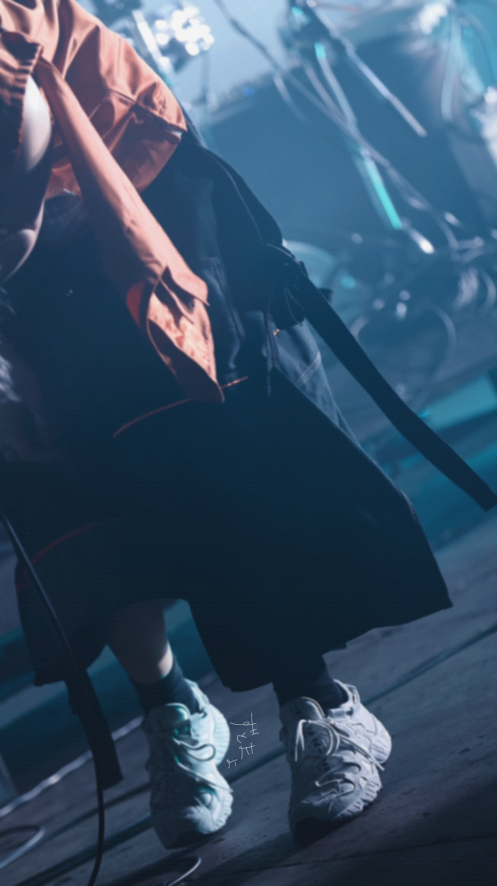
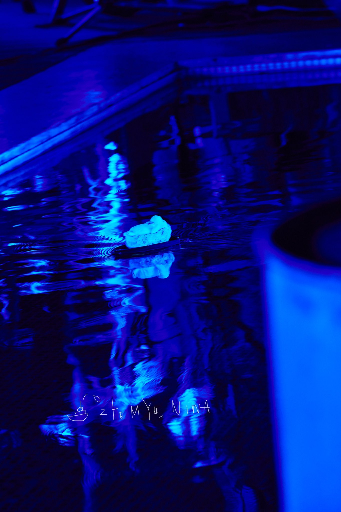

メンバー
固定メンバーは一人しかいない？
固定メンバーは、ボーカルの"ACAね"1人。
ずっと真夜中でいいのに。は、楽曲やライブによってバンドメンバーが変わる、特徴的なアーティストです。
ACAねは素顔非公開でTVなどには出演せず、有観客のライブでも煙幕などで素顔が隠されるなど、謎の多い人物です。


経歴
2018年
6月4日から活動開始。Youtubeに「秒針を噛む」のMVをアップロード。
およそ1週間で20万再生を記録する。
2作目となる「脳裏上のクラッカー」のMVを10月12日に、3作目となる「ヒューマノイド」のMVを11月6日に公開し、
11月14日にリリースされたメジャーデビューアルバム『正しい偽りからの起床』はオリコン、Billboard JAPANなど主要チャートで上位にランクインした。
2019年
初の正式なワンマンライブを1月11日に開催。チケットは即完売の人気ぶり。
このライブで一部を先行公開していた「眩しいDNAだけ」のMVを公開し、同月26日、配信シングルとしてリリースした。
6月12日に2枚目のミニアルバムである『今は今で誓いは笑みで』をリリースが決まり、アルバム発売に向けて「勘冴えて悔しいわ」を6月5日に先行配信リリース。
7月27日にはFUJI ROCK FESTIVAL’19 に出演を果たす。Zepp DiverCity Tokyoにて2日間のワンマンライブを8月5日、8月6日に開催した。両日共にチケットが全席種完売。
その後、初の全国ツアーを10月2日から11月27日の間に開催し、10月30日には初のフルアルバム『潜潜話』をリリース。
2020年
1月1日にはCOUNTDOWNJAPANに出演。
8月には3枚目のミニアルバム『朗らかな皮膚とて不服』をリリース。アルバムはオリコン、Billboard JAPAN で2位にランクインした。
また映画『さんかく窓の外側は夜』、『約束のネバーランド』にて主題歌を担当し、書き下ろした「暗く黒く」「正しくなれない」のMVも公開された。
2021年
1月に、ACAねが初のラジオ出演となるオールナイトニッポンに出演。
2ndフルアルバム『ぐされ』を2月10日にリリース。Youtubeチャンネル100万人記念で「勘冴えて悔しいわ」のMVを公開。
5月15日、16日には幕張メッセにて『CLEANING LABO「温れ落ち度」』を2日間4公演行った。
5月31日には、映画『キャラクター』の主題歌である「Character」のダウンロードストリーミング配信開始。
新プロジェクト「NO BORDER.」が発表され、コラボ楽曲「あいつら全員同窓会」が制作されたことが公表された。
7月27日には公式サイトが一新された。8月17日には全国17都市・全21公演をまわる初の全国ホールツアー「果羅火羅武」の開催が告知された。
また、同日ずっと真夜中でいいのに初となるファンクラブ「ZUTOMAYO PREMIUM」が旗揚げされた。9月29日に『LIVE Blu-ray CLEANING LABO「温れ落ち度」』を発売。
また、9月3日には「秒針を噛む」の再生回数が1億回を突破。
目次に戻る